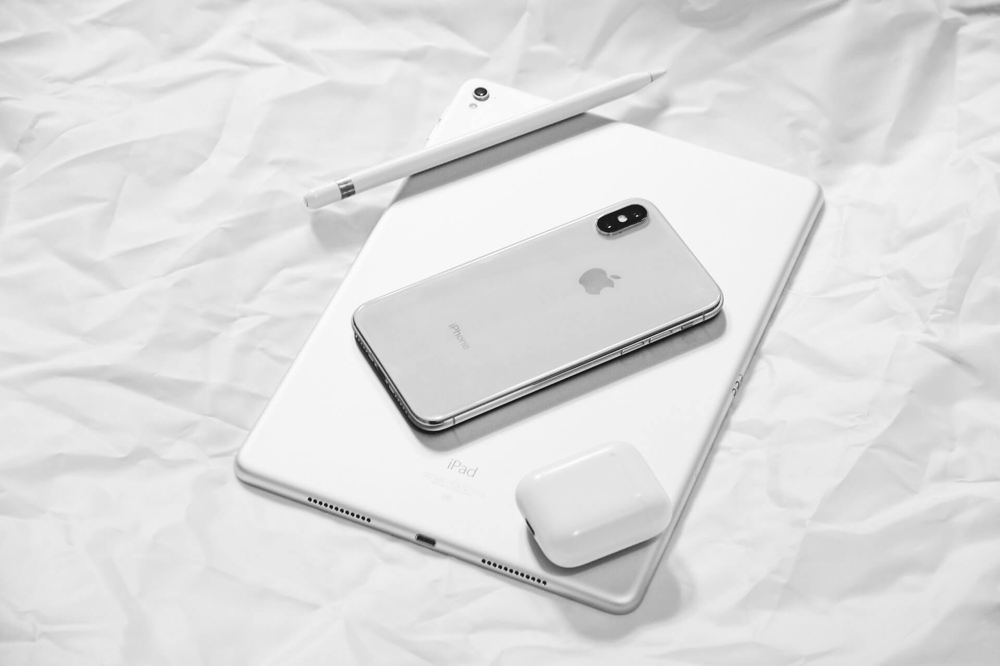

Om oss
Om INITs Mobilreparation
Sedan 1643 då INITs Mobilreparation grundades säljer vi tekniska produkter som gör livet lite roligare. Vi håller koll på trender och är snabba på att få in nyheter. Har din mobil fått sig en törn är du välkommen till någon av våra butiker för att få den reparerad.